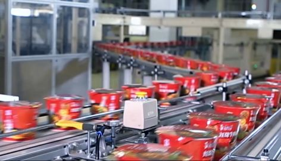
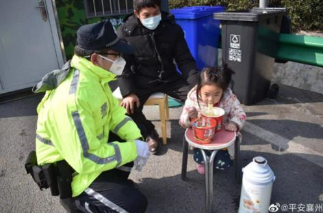

外卖订单里的武汉：穿越隔离的爱情、亲情与勇气
原文链接 备份链接 除夕前夜，因疫情蔓延，武汉宣布封城，机场、火车站、市内公共交通停闭，江城困围。封城以来，许多武汉人都承受着分离的苦楚，担心年迈独居的父母买不到菜，惋惜爱人最需要的时却不能陪在身边，常年在外工作的父亲错过仅有的看望孩子的 …

武汉封城，交通陷入停滞，外面的人无法进去。
“不要紧，我骑车去，骑一段少一段。”
2020年1月31日，江夏区金口卫生院24岁的医生甘如意，背上泡面、饼干等干粮，从荆州市公安县农村老家骑行300多公里返回武汉支援一线。
疫情之下，无数像甘如意这样的逆行者在一线奋战，方便面、面包等是他们最离不开的搭档，及时充饥让他们能更全身心的投入到战斗中。
突发的考验对所有国人都是一场淬炼。前方，数以万计的战士，正稳稳守护阵地。而我们普通大众，服从大局，响应号召宅在家里，也是另一场有使命感的“战斗”。
在这个注定难忘的春节，我们取消了走亲访友，少了热闹寒暄，但也留给我们更多与家人相伴的时间，心贴心唠唠家常、开动脑筋玩玩小游戏，甚至聚焦到朴素的一日三餐，家人在一起，能陪伴就是福……
搁在以往，我们总是等待爸妈做好可口的饭菜，但在家里蹲期间，许多人强行点亮了自己的大厨技能，究其原因，是“闲”的，更是“馋”的。不仅有凉皮、蛋糕这些高难度菜式争相斗艳，大多数人家中常备的方便面更成了香饽饽，毕竟比它方便的没它美味，比它美味的没它方便，许多人积极开发方便面的花样做法，更有人打趣到“万物皆可方便面”。

对于许多人来说，方便面就像是一位熟悉的老友，正是因为我们太了解它，所以才能有花样百出的烹饪方法。
不过，关于这位“老友”的争议也不小，那就是方便面到底有没有营养？
这种担心，与其说是老问题，不如说是一个“刻板”的问题。
果壳阅读策划人史军也注意到了这点。他是方便面的忠实爱好者，几乎吃过国内能买到的所有品牌方便面。
他指出，方便面被诟病的主要原因，还是方便面的营养不够全面，不能满足我们现代人急需的一些营养物质，比如维生素C和膳食纤维，于是被斥为没有全面营养。再后来，被传着传着就变成没有营养了。
然而科学研究表明，就算除去五花八门的添加物质，方便面里起码有面粉（碳水化合物，蛋白质）和油（脂肪），七大营养素就占了仨，泡着吃的时候还得喝水，你说方便面没营养，就好像非要说我们正常呼吸空气里没有氧气一个意思。

中国医学科学技术大学附属第一医院神经外科主治医师徐昊也会在家煮泡面给孩子吃，他表示，方便面并不是没营养，只是营养不全面，所有食物都是如此。如果只吃一种食物，没有什么食物可以和方便面媲美。即使是对于孩子来说，方便面作为一种能量食品，本质来说和米饭、面条没什么差别。对处于成长期的孩子来说，也可以作为正常食物来源之一。
此外，关于“添加防腐剂”的困扰，方便面企业也需要站出来辟谣。就拿康师傅来说，其面饼在生产的过程中已经做到了完全脱水，含水量数值不到3%，从而有效抑制了有害霉菌在面饼及脱水蔬菜上的滋生。也就是说，泡面本身就具备防腐能力，根本无需额外添加防腐剂。

在如今的特殊时期，封城消息一出，方便面抢购一空。在抗击疫情的慰问品里，出现最多的也是方便面。
其实，近些年，方便面也常常出现在产业竞争的案例当中。本来在国内，方便面是一个800亿规模的巨大市场，但谁也没有想到，互联网时代来临后，它的最大竞争者竟然是外卖。外卖的出现，让很多人认为属于方便面的时代一去不复返了。
然而竞争格局也是件很有趣的事情，它永远都在动态变化。方便面行业没有一成不变，厂商们都纷纷开始升级发力，当消费者对方便面的需求日益多样化、个性化，方便面行业也在不断扭转趋势，力争实现口味和营养的创新，布局高端产品领域。

图片/平安襄州
方便面是具有时代特色的食品，每个人都有与它相关的记忆。疫情之下，只有共同坚守，才能共赢胜利。感谢方便面始终守护在我们身边，成为我们密不可分的生活拍档，从逆境中寻求生生不息的力量源泉，有它，真好！
本文仅代表作者观点，不代表平台立场
作者 | 林克
排版 | GINNY
图片 | 部分来源于网络

文章已于修改
原文链接 备份链接 除夕前夜，因疫情蔓延，武汉宣布封城，机场、火车站、市内公共交通停闭，江城困围。封城以来，许多武汉人都承受着分离的苦楚，担心年迈独居的父母买不到菜，惋惜爱人最需要的时却不能陪在身边，常年在外工作的父亲错过仅有的看望孩子的 …
原文链接 备份链接 今天是武汉每日书第八篇。有在汉口的市场销售人员，在武汉的自由职业者，在黄石的编剧……共同书写他们在这次疫情中所经历的生活片段，关于日常饮食、亲情反思和人间观察。 **01 ** 封城时刻， 如何点一份让人放心的外卖 …
原文链接 备份链接 2020年1月23日凌晨2点，武汉市宣布自10时起交通封城，尽管很多人还在睡梦之中，在8个小时的窗口时间内，仍有很多人选择连夜出城。更多的人，则留了下来，有的人别无选择，有的人则担心自己无论去哪里都是潜在的传播者。一位 …
原文链接 备份链接 _ _ _ _ 这几天，有媒体称“风月同天”不如“武汉加油”，后被群嘲。因为它背后的逻辑，并不是在讨论“灾难当头可否允许诗意停留”，而是把诗意直接当作非日常的存在，好像感风吟月都是特殊的情绪仪式，平日里不好随意散发的， …
原文链接 备份链接 凤凰新闻客户端 凤凰网在人间工作室出品 *15分钟的路程，我花了15天时间* @高风 坐标：武汉&武汉 肺炎与爱情有2个相似之处：一是身体会有征兆，让人呼吸紧张、情绪不稳；二是无可幸免，稍没注意便会染上，但也 …